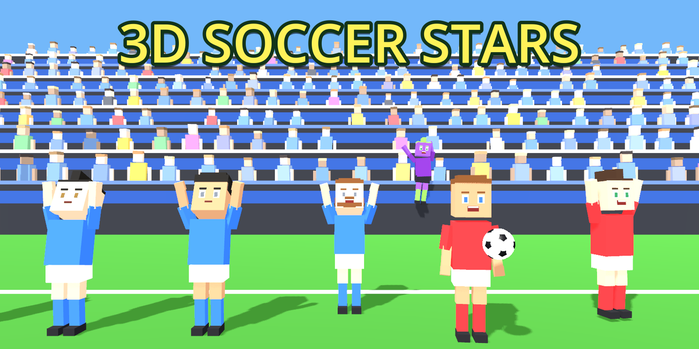

3D Soccer Stars is an arcade football game for the Solana Seeker Android device. It is a single-player game at heart: jump into a quick match, grind a season-long career, or sharpen your skills in training. Collect and upgrade player cards, and unlock new stadiums as you progress. There are no ads and no forced sign-up — you can play the whole game offline.
Connecting a Solana wallet is optional and only needed for cloud-saved progress, the online leaderboard and optional in-app purchases of in-game coins. The app is non-custodial: it never holds your keys or funds. Purchases are paid in SOL through the Solana Mobile Wallet Adapter, and every transaction must be explicitly approved by you in your own wallet app. In-game coins and cards are virtual items with no monetary value outside the game.
By installing or using 3D Soccer Stars you accept the following terms:
Questions, bug reports or support requests: infernaytb@gmail.com. We aim to reply within a few business days.